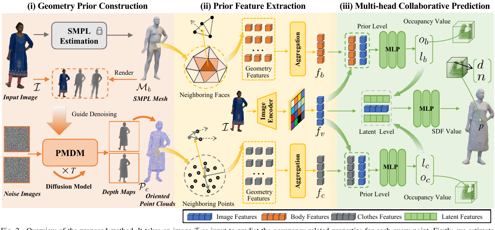
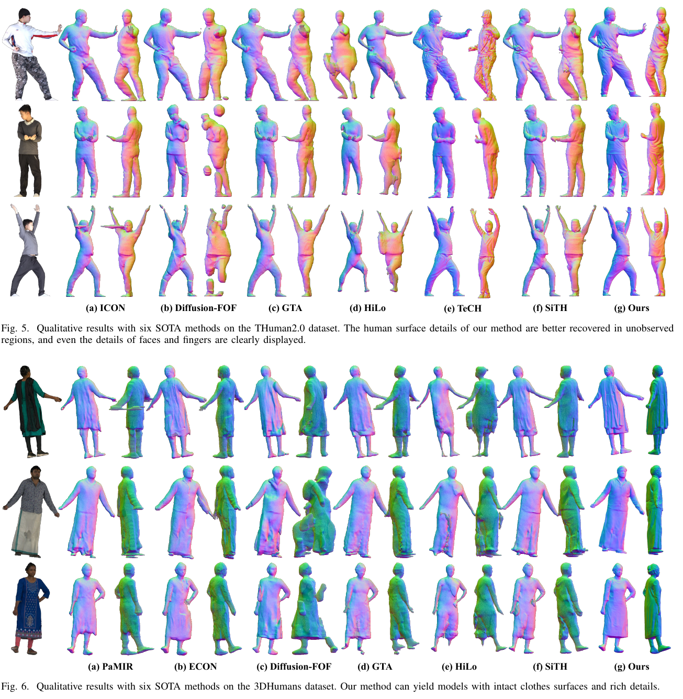
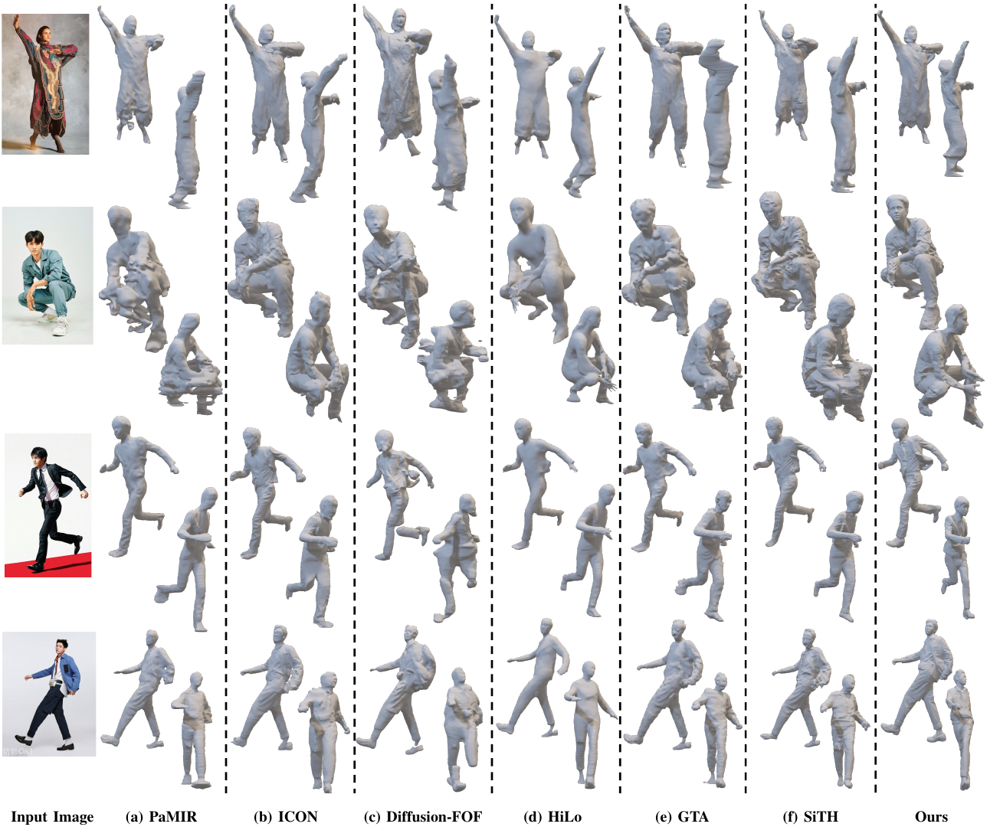

IEEE Transactions on Visualization and Computer Graphics · 2026
GeoCoHuman: Single-view 3D Clothed Human Reconstruction via Complementary Geometry Priors
Wuhan University · *Corresponding author
Vol. 32, No. 10, pp. 8364–8378 · Article 11626594
Abstract
Single-image 3D clothed human reconstruction is challenging, especially for complex poses and loose clothing. Existing methods are limited by insufficient 3D geometry priors and weak prior exploitation. We propose GeoCoHuman, which uses two complementary geometry priors: an oriented point cloud that captures unconstrained clothing topology and a parametric SMPL mesh that regularizes human shape. A Parametric Model-guided Diffusion Model (PMDM) infers front and back depth maps to construct the oriented point cloud. Proximity Feature Aggregation (PFA) extracts geometry-aligned features from multi-distance neighborhoods, while a Collaboration Perception Implicit Function (CPIF) uses multi-head collaborative prediction to reconstruct fine-grained surfaces. Experiments on two benchmarks and in-the-wild images demonstrate state-of-the-art performance.
Overview

Our pipeline has three stages. PMDM constructs a clothes geometry prior from front and back depth maps. PFA gathers local, geometry-aligned features from the oriented point cloud and SMPL mesh. CPIF models the two priors separately, then fuses their latent features for detailed occupancy and surface prediction.
Results


THuman2.0
CD 0.8241 · PSD 0.8924 · NC 0.0622
3DHumans
CD 1.1610 · PSD 1.1291 · NC 0.0821
GeoCoHuman achieves the best result across all six reported metrics on THuman2.0 and 3DHumans. Qualitative comparisons show more complete clothing surfaces and richer details, particularly in unseen regions and challenging in-the-wild cases. Lower metric values are better.
BibTeX
@ARTICLE{11626594,
author = {Sun, Jianchi and Luo, Fei and Shen, Xiangqian and Xiao, Chunxia},
journal = {IEEE Transactions on Visualization and Computer Graphics},
title = {GeoCoHuman: Single-View 3D Clothed Human Reconstruction
via Complementary Geometry Priors},
year = {2026},
volume = {32},
number = {10},
pages = {8364-8378},
}